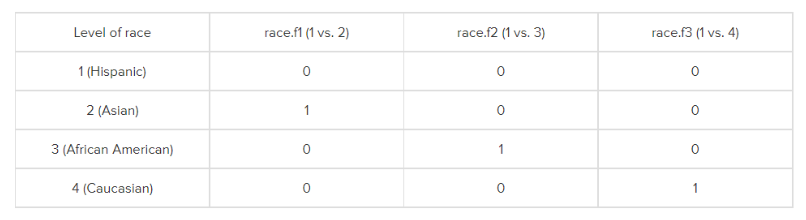
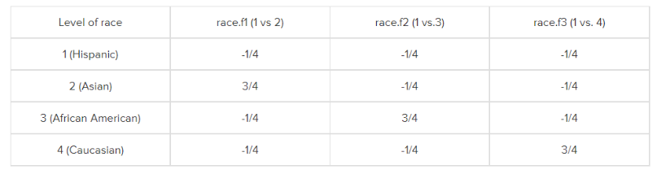
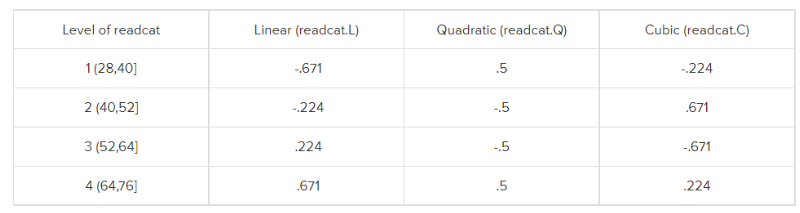
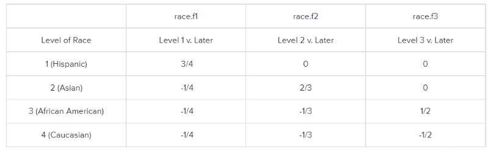
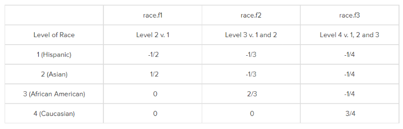
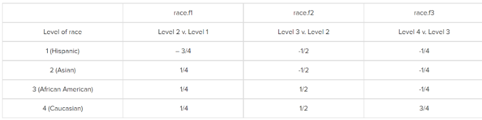

19 分类变量进行回归分析时的编码方案
R语言中的分类变量在进行回归分析时，通常会进行一些编码设置，最常见的是哑变量设置，除了哑变量，还有其他的很多类型。
通常一个有K个类别的分类变量在进入回归分析时，会被自动编码成K-1个序列，然后会得到K-1个回归系数，这些回归系数对应着因变量根据K个类别分组后计算的平均值！这样说起来非常抽象，下面对着例子看可能更简单一点。
R中的这些编码方案又叫做比较（contrast）矩阵设计，虽然都是默认自动进行的，但是了解它们的工作方式可以帮助我们更好的理解背后的意义，以及如何自定义设置各种方案。比如我们在做逻辑回归时哑变量的设置是如何进行的，重复测量方差分析多重比较中contrast是怎样设置的等。
19.1 演示数据
使用hsb2数据集进行演示。其中write是数值型因变量，race是其中一个自变量，是无序分类变量，有4个类别：1 = Hispanic, 2 = Asian, 3 = African American and 4 = Caucasian。
load(file = "datasets/codingSchemes.rdata")
# 把race变为因子型，并放到新的一列中
hsb2$race.f <- factor(hsb2$race, labels=c("Hispanic", "Asian", "African-Am", "Caucasian"))
# 根据race.f进行分组，计算分组后因变量write的均值
tapply(hsb2$write, hsb2$race.f, mean)
## Hispanic Asian African-Am Caucasian
## 46.45833 58.00000 48.20000 54.05517记住这个均值，很重要，后面要用的！
19.2 Dummy Coding
哑变量是最常见的分类变量编码方式，它以其中一个类别为参考，其他所有类别都和参考进行比较。比如，我们设定race中的1为参考，2,3,4都和1进行比较，也就是race=1时，write的均值。

这也是R语言中数值型和无序因子型变量的默认编码方式，如果要手动设置，可以使用函数contr.treatment()，这个函数就是手动进行哑变量设置的函数。
contr.treatment(4)
## 2 3 4
## 1 0 0 0
## 2 1 0 0
## 3 0 1 0
## 4 0 0 1这是一个比较矩阵，如果有4个类别就是4行，每行代表一个类别，比如第一行，2,3,4都是0，那么就代表类别1,；第二行，2是1,3,4都是0，就是代表类别2，以此类推。
如果有K个类别，就会有K-1个哑变量，比如我们这个例子，有4个类别，就有3个哑变量，在R中的其他编码方式也是这样的。
R语言中对不同类型的变量都会有默认的编码方式，可以通过contrasts()函数查看，比如对于race.f默认的就是哑变量编码：
# 和上面的比较矩阵一模一样的形式
contrasts(hsb2$race.f)
## Asian African-Am Caucasian
## Hispanic 0 0 0
## Asian 1 0 0
## African-Am 0 1 0
## Caucasian 0 0 1在前面介绍logistic回归时，多次使用过哑变量编码的方式，因为是默认的，所以并不用手动设置！
手动设置也可以，和默认是一样的结果，现在我们定义race.f这个变量进入回归模型后使用哑变量编码的方式：
# 手动定义变量的编码方式
contrasts(hsb2$race.f) <- contr.treatment(4)
# 进行回归
summary(lm(write ~ race.f, data = hsb2))
##
## Call:
## lm(formula = write ~ race.f, data = hsb2)
##
## Residuals:
## Min 1Q Median 3Q Max
## -23.0552 -5.4583 0.9724 7.0000 18.8000
##
## Coefficients:
## Estimate Std. Error t value Pr(>|t|)
## (Intercept) 46.458 1.842 25.218 < 2e-16 ***
## race.f2 11.542 3.286 3.512 0.000552 ***
## race.f3 1.742 2.732 0.637 0.524613
## race.f4 7.597 1.989 3.820 0.000179 ***
## ---
## Signif. codes: 0 '***' 0.001 '**' 0.01 '*' 0.05 '.' 0.1 ' ' 1
##
## Residual standard error: 9.025 on 196 degrees of freedom
## Multiple R-squared: 0.1071, Adjusted R-squared: 0.0934
## F-statistic: 7.833 on 3 and 196 DF, p-value: 5.785e-05可以看到结果中race.f2/race.f3/race.f4，都是和race.f1进行比较！和不设置的是一模一样的结果。
请注意它们的系数，比如
race.f2的系数是11.542，这个系数就是根据race.f进行分组后，race.f=2时write的均值 减去 race.f=1时write的均值，也就是58-46.45833！intercept（截距）的系数就是参考组write的平均值46.45833！
哑变量编码后的数据进入回归分析时的具体操作可以这么理解，比如现在是race.f这个变量设置了哑变量编码的方式，那当它进入回归分析时，这一列就被我们设置的另外3列替代了，也就是原数据中的race.f这一列被另外3列哑变量替代了，当race.f这列的值是Hispanic时，3列哑变量就分别是0,0,0，如果race.f这列的值是Asian时，3列哑变量就分别是1,0,0，不知道大家理解了没有。
19.3 simple coding
简单编码和哑变量编码的唯一不同之处是截距！哑变量的截距是参考组的因变量平均值，简单编码的截距是总的平均值。
下面这张图是简单编码的方式。简单编码的所有类别编码相加需要等于1。

level 1还是参考组，对于race.f1，是类别2比类别1，类别2就被编码为3/4，其他类别都是 -1/4，对于race.f2是类别3比类别1，类别3就别编码为为3/4，其他类别被编码为 -1/4，对于race.f3是类别4比类别1，类别4别编码为3/4，其他类别被编码为 -1/4。
也就是说，参考组肯定是被编码为 -1/4（和类别个数有关，这里race.f是4个类别），谁和参考组比谁就被编码为 3/4。
如果变量有K个类别的话，那就是参考组被编码为 -1/k，谁和参考组比谁就被编码为(k-1)/k。
simple coding在R中并没有提供直接的函数，但是可以通过哑变量进行转换：
# 设置simple coding
c<-contr.treatment(4)
my.coding<-matrix(rep(1/4, 12), ncol=3)
my.simple<-c-my.coding
my.simple
## 2 3 4
## 1 -0.25 -0.25 -0.25
## 2 0.75 -0.25 -0.25
## 3 -0.25 0.75 -0.25
## 4 -0.25 -0.25 0.75# 把race.f变成simple coding
contrasts(hsb2$race.f) <- my.simple
# 进行回归
summary(lm(write ~ race.f, data = hsb2))
##
## Call:
## lm(formula = write ~ race.f, data = hsb2)
##
## Residuals:
## Min 1Q Median 3Q Max
## -23.0552 -5.4583 0.9724 7.0000 18.8000
##
## Coefficients:
## Estimate Std. Error t value Pr(>|t|)
## (Intercept) 51.6784 0.9821 52.619 < 2e-16 ***
## race.f2 11.5417 3.2861 3.512 0.000552 ***
## race.f3 1.7417 2.7325 0.637 0.524613
## race.f4 7.5968 1.9889 3.820 0.000179 ***
## ---
## Signif. codes: 0 '***' 0.001 '**' 0.01 '*' 0.05 '.' 0.1 ' ' 1
##
## Residual standard error: 9.025 on 196 degrees of freedom
## Multiple R-squared: 0.1071, Adjusted R-squared: 0.0934
## F-statistic: 7.833 on 3 and 196 DF, p-value: 5.785e-05可以看到除了截距不一样，其他的系数都是一样的，这里的截距51.6784 = (46.45833 + 58 + 48.2 + 54.05517)/4 。
19.4 Deviation coding
这种编码方式比较的是某个类别的因变量的均值和其他所有类别的因变量的均值。它的比较矩阵是下面这种的。

第1组是比较类别1和其它所有类别，第2组是比较类别2和其它所有类别，第3组是比较类别3和其它所有类别。
这种比较矩阵（编码方式）通过赋值1，0，-1实现。第1组中，类别1被设为1（因为是类别1和其他所有类别比较），第2组是类别2被设为1，第3组是类别3倍设为1，而类别4一直是 -1，因为它没和别人比过。
在R中通过函数contr.sum()实现这种编码方式（比较矩阵）：
contr.sum(4)
## [,1] [,2] [,3]
## 1 1 0 0
## 2 0 1 0
## 3 0 0 1
## 4 -1 -1 -1现在我们把race.f这个变量设置为deviation coding，再次进行回归分析：
contrasts(hsb2$race.f) <- contr.sum(4)
summary(lm(write ~ race.f, data = hsb2))
##
## Call:
## lm(formula = write ~ race.f, data = hsb2)
##
## Residuals:
## Min 1Q Median 3Q Max
## -23.0552 -5.4583 0.9724 7.0000 18.8000
##
## Coefficients:
## Estimate Std. Error t value Pr(>|t|)
## (Intercept) 51.6784 0.9821 52.619 < 2e-16 ***
## race.f1 -5.2200 1.6314 -3.200 0.00160 **
## race.f2 6.3216 2.1603 2.926 0.00384 **
## race.f3 -3.4784 1.7323 -2.008 0.04602 *
## ---
## Signif. codes: 0 '***' 0.001 '**' 0.01 '*' 0.05 '.' 0.1 ' ' 1
##
## Residual standard error: 9.025 on 196 degrees of freedom
## Multiple R-squared: 0.1071, Adjusted R-squared: 0.0934
## F-statistic: 7.833 on 3 and 196 DF, p-value: 5.785e-05此时的截距是总的均值，也就是(46.4583 + 58 + 48.2 + 54.0552) / 4 = 51.678375，回归系数是相应类别的均值减去总的均值，比如race.f1的回归系数 -5.2200 = 46.4583 – 51.678375。
19.5 Orthogonal Polynomial Coding
正交多项式编码，在重复测量方差分析的多重比较中用过，这种编码方式常用于线性趋势检验，检测某自变量的1次项、2次项、3次项等和因变量之间有无线性关系。只用在有序分类变量（有序因子）且不同类别间对因变量影响相同的情况下。
在R语言中中通过函数contr.poly()实现对某个变量的正交多项式编码，对于有序因子变量来说，这种编码方式是默认的，不需要手动指定。
我们使用hsb2数据集中的read这一个变量，把它变成一个有序因子：
# 新建一列，根据read转换为有序因子
hsb2$readcat <- cut(hsb2$read, 4, ordered=T)
table(hsb2$readcat)
##
## (28,40] (40,52] (52,64] (64,76]
## 22 93 55 30
tapply(hsb2$write, hsb2$readcat, mean)
## (28,40] (40,52] (52,64] (64,76]
## 42.77273 49.97849 56.56364 61.83333
contr.poly(4)
## .L .Q .C
## [1,] -0.6708204 0.5 -0.2236068
## [2,] -0.2236068 -0.5 0.6708204
## [3,] 0.2236068 -0.5 -0.6708204
## [4,] 0.6708204 0.5 0.2236068目前我们还未对readcat这个变量进行任何编码设置，但是R语言是有默认编码方式的，可以通过contrasts()查看：
# 发现默认就是正交多项式编码
contrasts(hsb2$readcat)
## .L .Q .C
## [1,] -0.6708204 0.5 -0.2236068
## [2,] -0.2236068 -0.5 0.6708204
## [3,] 0.2236068 -0.5 -0.6708204
## [4,] 0.6708204 0.5 0.2236068当然也可以手动设置：
contrasts(hsb2$readcat) <- contr.poly(4)
summary(lm(write ~ readcat, data = hsb2))
##
## Call:
## lm(formula = write ~ readcat, data = hsb2)
##
## Residuals:
## Min 1Q Median 3Q Max
## -18.979 -5.824 1.227 5.436 17.021
##
## Coefficients:
## Estimate Std. Error t value Pr(>|t|)
## (Intercept) 52.7870 0.6339 83.268 <2e-16 ***
## readcat.L 14.2587 1.4841 9.607 <2e-16 ***
## readcat.Q -0.9680 1.2679 -0.764 0.446
## readcat.C -0.1554 1.0062 -0.154 0.877
## ---
## Signif. codes: 0 '***' 0.001 '**' 0.01 '*' 0.05 '.' 0.1 ' ' 1
##
## Residual standard error: 7.726 on 196 degrees of freedom
## Multiple R-squared: 0.3456, Adjusted R-squared: 0.3356
## F-statistic: 34.51 on 3 and 196 DF, p-value: < 2.2e-16回归分析结果显示readcat的一次项和因变量有很强的的线性关系，二次项和三次项没有明显的线性关系。
19.6 Helmert Coding
Helmert Coding比较的是当前类别下的因变量平均值和后面的类别的因变量平均值。

如上图所示，race.f1比较的是类别1的因变量平均值和类别2,3,4的因变量平均值，race.f2比较的是类别2的因变量平均值和类别3,4的因变量平均值，race.f3比较的是类别3的因变量平均值和类别4的因变量平均值。
R中提供了contr.helmert，但是对应的是 反helmert编码方式。所以如果想要对一个变量使用Helmert coding，需要手动设置：
my.helmert <- matrix(c(3/4, -1/4, -1/4, -1/4, 0, 2/3, -1/3, -1/3, 0, 0, 1/
2, -1/2), ncol = 3)
my.helmert
## [,1] [,2] [,3]
## [1,] 0.75 0.0000000 0.0
## [2,] -0.25 0.6666667 0.0
## [3,] -0.25 -0.3333333 0.5
## [4,] -0.25 -0.3333333 -0.5现在把race.f设置为Helmert coding：
contrasts(hsb2$race.f) <- my.helmert
summary(lm(write ~ race.f, hsb2))
##
## Call:
## lm(formula = write ~ race.f, data = hsb2)
##
## Residuals:
## Min 1Q Median 3Q Max
## -23.0552 -5.4583 0.9724 7.0000 18.8000
##
## Coefficients:
## Estimate Std. Error t value Pr(>|t|)
## (Intercept) 51.6784 0.9821 52.619 < 2e-16 ***
## race.f1 -6.9601 2.1752 -3.200 0.00160 **
## race.f2 6.8724 2.9263 2.348 0.01985 *
## race.f3 -5.8552 2.1528 -2.720 0.00712 **
## ---
## Signif. codes: 0 '***' 0.001 '**' 0.01 '*' 0.05 '.' 0.1 ' ' 1
##
## Residual standard error: 9.025 on 196 degrees of freedom
## Multiple R-squared: 0.1071, Adjusted R-squared: 0.0934
## F-statistic: 7.833 on 3 and 196 DF, p-value: 5.785e-05race.f1的回归系数 -6.9601 = 46.4583 – [(58 + 48.2 + 54.0552) / 3]，也就是类别1的因变量平均值减去类别2,3,4的因变量平均值；race.f2和race.f3的系数同理。
19.7 Reverse Helmert Coding
和Helmert Coding刚好完全相反，每一个类别和它前面的类别比较。
如下图所示，race.f1比较的是类别2的因变量平均值和类别1的因变量平均值，race.f2比较的是类别3的因变量平均值和类别1,2的因变量平均值，race.f3比较的是类别4的因变量平均值和类别1,2,3的因变量平均值。

R中提供了contr.helmert，可以进行Reverse Helmert Coding：
contr.helmert(4)
## [,1] [,2] [,3]
## 1 -1 -1 -1
## 2 1 -1 -1
## 3 0 2 -1
## 4 0 0 3把race.f设置为这种编码方式再次进行回归分析：
contrasts(hsb2$race.f) <- contr.helmert(4)
summary(lm(write ~ race.f, hsb2))
##
## Call:
## lm(formula = write ~ race.f, data = hsb2)
##
## Residuals:
## Min 1Q Median 3Q Max
## -23.0552 -5.4583 0.9724 7.0000 18.8000
##
## Coefficients:
## Estimate Std. Error t value Pr(>|t|)
## (Intercept) 51.6784 0.9821 52.619 < 2e-16 ***
## race.f1 5.7708 1.6431 3.512 0.000552 ***
## race.f2 -1.3431 0.8675 -1.548 0.123170
## race.f3 0.7923 0.3720 2.130 0.034439 *
## ---
## Signif. codes: 0 '***' 0.001 '**' 0.01 '*' 0.05 '.' 0.1 ' ' 1
##
## Residual standard error: 9.025 on 196 degrees of freedom
## Multiple R-squared: 0.1071, Adjusted R-squared: 0.0934
## F-statistic: 7.833 on 3 and 196 DF, p-value: 5.785e-05看完了上面那么多例子，这个回归系数的解读大家应该明白了吧，这里就不再赘述了。
19.8 Forward Difference Coding
这种编码方式比较的是当前类别的因变量均值和它相邻的下一个类别的因变量均值，注意是下一个，Helmert coding是多个。
如下图所示，race.f1比较的是类别1和类别2，race.f2比较的是类别2和3，race.f3`比较的是类别3和类别4。

R语言中并没有默认函数提供此类编码方式，需要手动设置。
my.forward.diff = matrix(c(3/4, -1/4, -1/4, -1/4, 1/2, 1/2, -1/2, -1/2, 1/
4, 1/4, 1/4, -3/4), ncol = 3)
my.forward.diff
## [,1] [,2] [,3]
## [1,] 0.75 0.5 0.25
## [2,] -0.25 0.5 0.25
## [3,] -0.25 -0.5 0.25
## [4,] -0.25 -0.5 -0.75把race.f设置为这种编码方式：
contrasts(hsb2$race.f) <- my.forward.diff
summary(lm(write ~ race.f, data = hsb2))
##
## Call:
## lm(formula = write ~ race.f, data = hsb2)
##
## Residuals:
## Min 1Q Median 3Q Max
## -23.0552 -5.4583 0.9724 7.0000 18.8000
##
## Coefficients:
## Estimate Std. Error t value Pr(>|t|)
## (Intercept) 51.6784 0.9821 52.619 < 2e-16 ***
## race.f1 -11.5417 3.2861 -3.512 0.000552 ***
## race.f2 9.8000 3.3878 2.893 0.004251 **
## race.f3 -5.8552 2.1528 -2.720 0.007118 **
## ---
## Signif. codes: 0 '***' 0.001 '**' 0.01 '*' 0.05 '.' 0.1 ' ' 1
##
## Residual standard error: 9.025 on 196 degrees of freedom
## Multiple R-squared: 0.1071, Adjusted R-squared: 0.0934
## F-statistic: 7.833 on 3 and 196 DF, p-value: 5.785e-05race.f1的截距是类别2和类别1的因变量差值， -11.5417 = 46.4583 – 58，race.f2的截距 是类别3和类别2的因变量差值，9.9 = 58 – 48.2，race.f3的截距是类别4和类别3的因变量差值，-5.8552 = 48.2 – 54.0552。
19.9 Backward Difference Coding
这种编码方式和前一种刚好相反，比较的是当前类别和它相邻的前一个类别的因变量均值。

在R语言中实现这种编码方式也是需要手动设置的：
my.backward.diff = matrix(c(-3/4, 1/4, 1/4, 1/4, -1/2, -1/2, 1/2, 1/2, -1/4, -1/4, -1/4, 3/4), ncol = 3)
my.backward.diff
## [,1] [,2] [,3]
## [1,] -0.75 -0.5 -0.25
## [2,] 0.25 -0.5 -0.25
## [3,] 0.25 0.5 -0.25
## [4,] 0.25 0.5 0.75contrasts(hsb2$race.f) <- my.backward.diff
summary(lm(write ~ race.f, data = hsb2))
##
## Call:
## lm(formula = write ~ race.f, data = hsb2)
##
## Residuals:
## Min 1Q Median 3Q Max
## -23.0552 -5.4583 0.9724 7.0000 18.8000
##
## Coefficients:
## Estimate Std. Error t value Pr(>|t|)
## (Intercept) 51.6784 0.9821 52.619 < 2e-16 ***
## race.f1 11.5417 3.2861 3.512 0.000552 ***
## race.f2 -9.8000 3.3878 -2.893 0.004251 **
## race.f3 5.8552 2.1528 2.720 0.007118 **
## ---
## Signif. codes: 0 '***' 0.001 '**' 0.01 '*' 0.05 '.' 0.1 ' ' 1
##
## Residual standard error: 9.025 on 196 degrees of freedom
## Multiple R-squared: 0.1071, Adjusted R-squared: 0.0934
## F-statistic: 7.833 on 3 and 196 DF, p-value: 5.785e-05此时的截距正负号刚好和上面一种情况相反。
这几种就是常见的R语言中分类变量的编码方式，除了这几个，大家还可以根据自己需要灵活手动设置。
大家以为这套规则只是R语言中独有的吗？并不是，在SPSS、SAS等软件中，分类变量的编码方式也是类似的！
这里只演示了线性回归的，logistic回归、cox回归也是类似的编码方案！